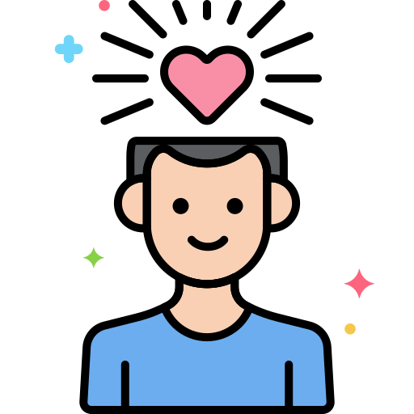

How to look after your mental health

Talking about your feelings can help you stay in good mental health and deal with times when you feel troubled.
Your brain needs a mix of nutrients in order to stay healthy and function well, just like the other organs in your body. A diet that is good for your physical health is also good for your mental health.

There is nothing better than catching up with someone face to face, but that is not always possible. You can also give them a call, drop them a note, or chat to them online instead. Keep the lines of communication open: it is good for you!
None of us are superhuman. We all sometimes get tired or overwhelmed by how we feel or when things don't go to plan. If things are getting too much for you and you feel you can't cope, ask for help. Your family or friends may be able to offer practical help or a listening ear. Local services are there to help you.

A change of scene or a change of pace is good for your mental health.
.png)
We’re all different. It is much healthier to accept that you are unique than to wish you were more like someone else. Feeling good about yourself boosts your confidence to learn new skills, visit new places and make new friends. Good self-esteem helps you cope when life takes a difficult turn.
